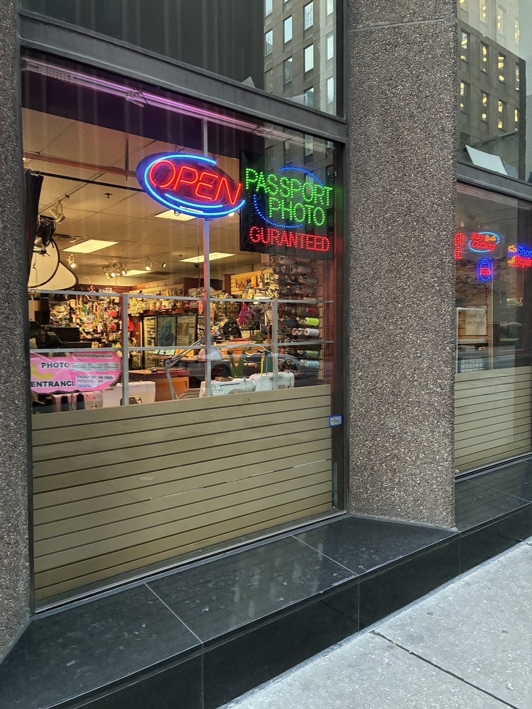

Passport photos · 15 Toronto Street, downtown Toronto
Passport photos, printing & repairs, downtown.
A shop at 15 Toronto Street, a short walk from the passport office. Reviewers come to Kelly for passport and ID photos, and they also talk about printing, key cutting, and shoe and belt repair. Call (416) 368-3019.
- Passport & ID photos
- Printing
- Key cutting & fobs
- Shoe & belt repair
- Pants hemming
What’s in the shop
Passport and ID photos
Google lists City Photo and Print as a passport photo processor. The window has a neon Passport Photo sign, and a sidewalk board lists passport and visa/PR. Nick Adams wrote that “Kelly (the owner) takes the best passport and ID photos of all the places that offer this service downtown.” Vanessa Pereira said she takes multiple photos until you’re happy and helps with the angles.
Printing, keys and fobs
Google also lists a digital printing service and a key duplication service. Neon in the window says E-mail Print, Key Cutting and Fob, and the sidewalk board repeats e-print and key/fob.
Shoe and belt repair, and pants hemming
A Shoe Repair neon sits in the window. CB, who used the shop for more than 10 years, came “for passport photos, shoe and belt repairs, and shoe shines.” The sidewalk board also lists pants hemming. No prices are listed here.
Services above come from Google’s categories (read 2026-11-16), from signs in the shop window and on the sidewalk board (visible in Google listing photos), and from Google reviews. The shop still has a convenience-store counter and drink coolers, which you can see in the photos; Google’s current name for the business is City Photo and Print, not the older “City Photo and Convenience.” Call (416) 368-3019 if you have questions about a photo type or a repair.
15 Toronto Street, downtown Toronto
A short walk from the passport office
Monday to Thursday, 7 a.m. to 6 p.m. · Friday 7 a.m. to 5 p.m.
City Photo and Print is at 15 Toronto Street (Floor 1 on Google). Older directories still list the former name, City Photo and Convenience, at 18 King Street East, Suite 101, with the same phone number. A 2023 slip in a review photo is printed “CITY Tobacco” at that older address. The entrance photo on this page shows the building number 15. Elizabeth Lopez Romero wrote that the shop is a five-minute walk from the passport office.
“Kelly (the owner) takes the best passport and ID photos of all the places that offer this service downtown.”
Nick Adams, Google review (as of Nov 16, 2026).
What customers say
4.9 ★ from 328 Google reviews (checked Nov 16, 2026). Quotes are word for word. Each one says where it was read: on the Google listing itself, or on a public page that copies reviews. Google shows only a handful of reviews without signing in, so some quotes are Google reviews copied by the CanadaCompanies directory (which still uses the former name and the 18 King Street East address).
★★★★★
Really quick and amazing passport photos! Kelly is the best! She’s so good and particular about her work. She takes multiple photos until you’re happy with the result and even helps you with the right angles. Highly recommend!
★★★★★
Exceptional service and truly professional!
I had a wonderful experience at this passport photo shop in downtown Toronto. From the moment I walked in, I was impressed by the warm welcome, professionalism, and genuine care.
What really stood out to me was the attention to detail. They didn’t simply take a photo—they made sure everything was done carefully and correctly, with the customer’s needs in mind. The process was quick and efficient, but never rushed.
The quality of the photos was excellent, and the service was friendly, patient, and personal. It is clear that they take great pride in their work and sincerely care about serving people well.
I would highly recommend this place to anyone who needs passport, visa, or ID photos in downtown Toronto. You can expect excellent quality, reasonable service, and, most importantly, people who genuinely care about their customers.
A truly five-star experience! Highly recommended!
★★★★★
Kelly (the owner) takes the best passport and ID photos of all the places that offer this service downtown.
She makes sure it looks good, she will tell you how to position your face and to adjust your expression (so that you look like you are in a Korean ad, very cool), and she knows which colour clothes cause problems. She will give you a coat if your shirt is a colour that won't reflect properly. Definitely a way better option to guarantee the photo is correct for the paperwork, and that it will look good until the ID expires (you don't want to look at a bad photo on your ID/passport for years, right?)
★★★★★
I came here in 2023 because I had done my photos at shoppers and they ruined them (plus shoppers was expensive). John helped me back in 2023! I came back today because luckily I had a copy of one of the photos saved. Kelly was fantastic. She helped me fix my outfit/hair & gave me tips on what would look good in the photo. “Smile with your eyes”!
The price is great & it took me less than 5 minutes. I recommend walking there it’s 5 minutes away from the passport office.
Would come back again again & again!
★★★★★
I worked in the area for over a decade and always came here for passport photos, shoe and belt repairs, and shoe shines. You truly can’t beat the price! Best in the city!
The quality of work is top-tier, the service is excellent, and they’re incredibly quick. I’m always busy and on the go, so I really appreciate how efficiently they get things done. It’s been the same couple running it all these years, and in more than 10 years of coming here, I’ve never left disappointed..
I don’t work in the area anymore, but whenever I’m downtown and need a passport photo or a shoe polish, this is still my go-to shop. Highly recommend!
★★★★★
Fast, professional, reasonably priced, and Kelly really cared about the quality of the photos and the dimensions for different visa requirements. And at half the price of shoppers, with this hidden gem around, there’s no need to go anywhere else for photos
★★★★★
I had a great experience here for my passport photo. They have a legit photo set up and Kelly ensured I was happy with my photo before I left. It was much cheaper than shoppers or other places in the area and no issues with my photo being rejected. I would highly recommend
★★★★★
Great experience! The Owner was so well prepared and friendly, gave straightforward direction so the photo turned out nicely, showed me the photos to choose from (and suggested the best one), and had me out of there within 5 minutes. What a wonderful service!
★★★★★
After going to innumerable places including Walmart ( refused that they don’t do infant picture) and Shoppers (tried their best) and being refused from all that they don’t do infant/ new born pictures - I was recommended about this shop while standing in queue at the passport office by an applicant. The owner was professional and had the gear needed for an infant passport picture like white mitts to hold the baby so that they appear white in background. Finally after many rejected passport pictures their’s was the one that was approved. Very much thankful.
Inside the shop
Real photos from City Photo and Print’s public Google listing and its customers’ reviews. Tap to enlarge.
Visit City Photo and Print
15 Toronto St
Toronto, ON M5C 1C4
Floor 1, downtown Toronto
18cityphoto@gmail.com
Email as printed on a shop-window sign. The “18” matches the former King Street address.
| Monday | 7 a.m.–6 p.m. |
|---|---|
| Tuesday | 7 a.m.–6 p.m. |
| Wednesday | 7 a.m.–6 p.m. |
| Thursday | 7 a.m.–6 p.m. |
| Friday | 7 a.m.–5 p.m. |
| Saturday | Closed |
| Sunday | Closed |
These are the hours on Google today: 7 a.m. to 6 p.m. Monday to Thursday, 7 a.m. to 5 p.m. Friday, closed Saturday and Sunday. A Business Hours sign in the entrance, visible in a Google listing photo, shows the same times. The shop is closed on weekends, so weekday mornings are when reviewers mention coming in before the passport office opens.